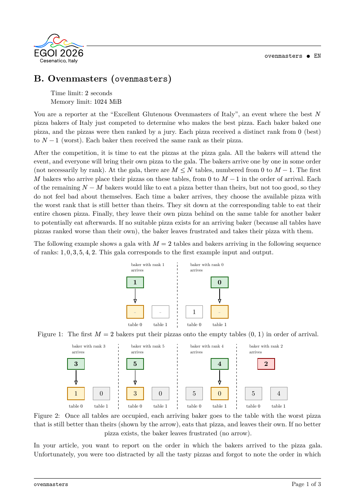
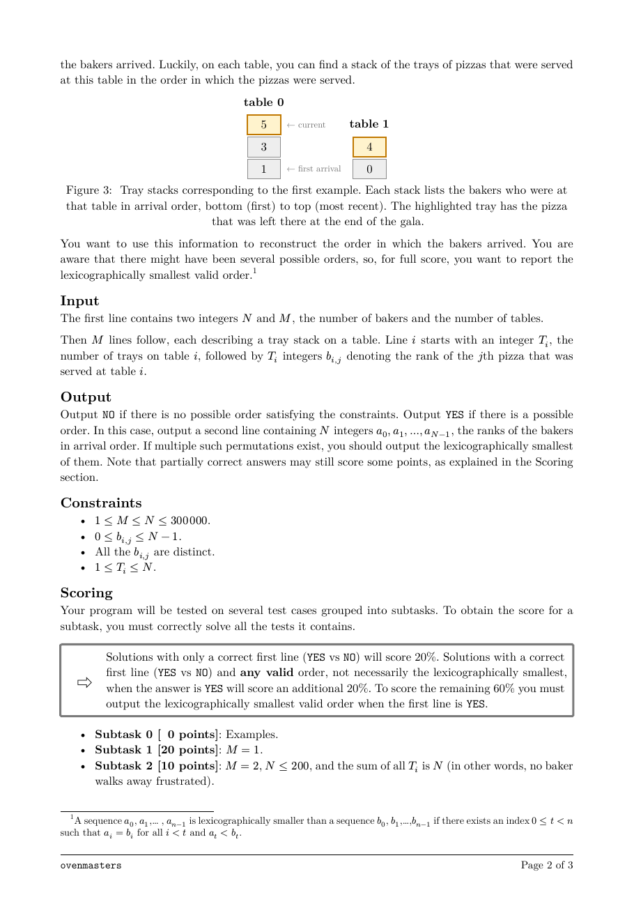
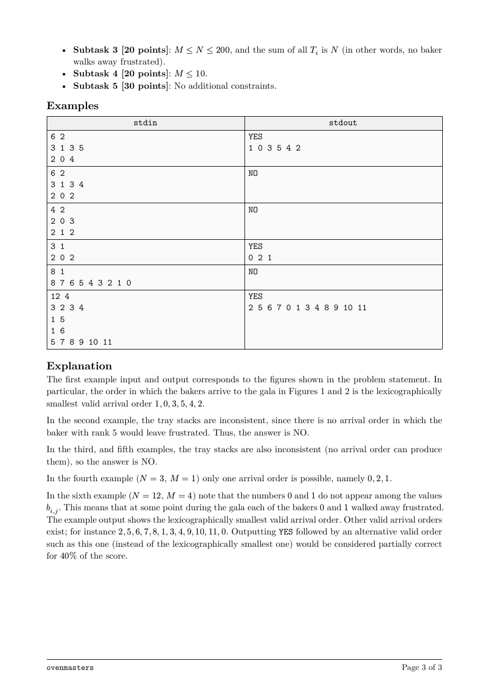

题面
来源：EGOI 2026 官方 PDF。模型收到的是由同一份 Typst 源文件转换的文字。



结果
Kimi K3.1 ProKimi
auto（max）
3/3
解出的采样 ↑
- 100采样 1 · 解出
- 100采样 2 · 解出
- 100采样 3 · 解出
- 18.2k平均输出 token（含思考） ↓
- 26.5输出速度 tokens/s ↑
- 675 秒延迟 ↓
DeepSeek Flash V4.1-1017DeepSeek
auto（high）
3/3
解出的采样 ↑
- 100采样 1 · 解出
- 100采样 2 · 解出
- 100采样 3 · 解出
- 29.7k平均输出 token（含思考） ↓
- 192.1输出速度 tokens/s ↑
- 155 秒延迟 ↓
MiniMax M3.1 FlashMiniMax
auto（max）
1/3
解出的采样 ↑
- 0.0采样 1 · 答案错误
- 100采样 2 · 解出
- 20.0采样 3 · 答案错误
- 42.9k平均输出 token（含思考） ↓
- 122.4输出速度 tokens/s ↑
- 337 秒延迟 ↓
↑ 越大越好，↓ 越小越好。得分 0–100，按官方时限判定，所有测试点都满分才算解出。CPU 时间 / 官方解为解出的答案在官方解最慢的 3 个测试点上的 CPU 时间之比（几何平均），只比较官方解至少需要 0.05 秒的题；复杂度按增长幂次相对官方解分类。判题与计分见 原理。
代码
Kimi K3.1 Pro · 采样 1 · 118 行
#include <bits/stdc++.h> using namespace std; int main() { ios::sync_with_stdio(false); cin.tie(nullptr); int N, M; if (!(cin >> N >> M)) return 0; vector<vector<int>> st(M); vector<char> present(N, false); for (int i = 0; i < M; ++i) { int T; cin >> T; st[i].resize(T); for (int j = 0; j < T; ++j) { cin >> st[i][j]; present[st[i][j]] = true; if (j > 0 && st[i][j - 1] >= st[i][j]) { cout << "NO\n"; return 0; } } } vector<int> missing; for (int r = 0; r < N; ++r) { if (!present[r]) missing.push_back(r); } vector<int> answer; answer.reserve(N); vector<int> top(M), nxt(M, 1); vector<char> queued(M, false); set<pair<int, int>> tops; // (current rank, table) for (int i = 0; i < M; ++i) { top[i] = st[i][0]; answer.push_back(top[i]); tops.insert({top[i], i}); } // Second component is the table, or -1 for a frustrated baker. priority_queue<pair<int, int>, vector<pair<int, int>>, greater<pair<int, int>>> pq; auto offer = [&](int i) { if (nxt[i] >= (int)st[i].size() || queued[i]) return; int r = st[i][nxt[i]]; auto it = tops.upper_bound({top[i], i}); // There must be no other current top strictly between top[i] and r. if (it == tops.end() || r < it->first) { queued[i] = true; pq.push({r, i}); } }; for (int i = 0; i < M; ++i) offer(i); size_t missPos = 0; while ((int)answer.size() < N) { int minimumTop = tops.begin()->first; // These bakers currently see no pizza better than theirs. // Eligibility never disappears, since table tops only increase. while (missPos < missing.size() && missing[missPos] < minimumTop) { pq.push({missing[missPos], -1}); ++missPos; } if (pq.empty()) { cout << "NO\n"; return 0; } auto [r, table] = pq.top(); pq.pop(); if (table == -1) { answer.push_back(r); continue; } queued[table] = false; int oldTop = top[table]; auto it = tops.find({oldTop, table}); // Only this table and the immediately preceding top can have // their eligibility changed by the replacement. int predecessor = -1; if (it != tops.begin()) predecessor = prev(it)->second; tops.erase(it); top[table] = r; ++nxt[table]; tops.insert({r, table}); answer.push_back(r); offer(table); if (predecessor != -1) offer(predecessor); } cout << "YES\n"; for (int i = 0; i < N; ++i) { if (i) cout << ' '; cout << answer[i]; } cout << '\n'; return 0; }
Kimi K3.1 Pro · 采样 2 · 145 行
#include <bits/stdc++.h> using namespace std; int main() { ios::sync_with_stdio(false); cin.tie(nullptr); int N, M; if (!(cin >> N >> M)) return 0; vector<vector<int>> st(M); vector<char> present(N, 0), isInitial(N, 0); for (int i = 0; i < M; ++i) { int T; cin >> T; st[i].resize(T); for (int j = 0; j < T; ++j) { cin >> st[i][j]; present[st[i][j]] = 1; } isInitial[st[i][0]] = 1; } bool ok = true; // Every replacement leaves a numerically larger rank on the table. for (int i = 0; i < M; ++i) { for (int j = 1; j < (int)st[i].size(); ++j) { if (st[i][j] <= st[i][j - 1]) ok = false; } } if (!ok) { cout << "NO\n"; return 0; } // The relative order of the current table tops never changes. vector<int> ord(M); iota(ord.begin(), ord.end(), 0); sort(ord.begin(), ord.end(), [&](int a, int b) { return st[a][0] < st[b][0]; }); for (int q = 0; q + 1 < M; ++q) { if (st[ord[q]].back() >= st[ord[q + 1]].back()) { ok = false; } } if (!ok) { cout << "NO\n"; return 0; } // Nodes are ranks. Edges describe exactly when an event becomes possible. vector<vector<int>> adj(N); vector<int> indeg(N, 0); auto addEdge = [&](int u, int v) { adj[u].push_back(v); ++indeg[v]; }; // Recorded arrivals. for (int q = 0; q < M && ok; ++q) { int t = ord[q]; for (int k = 1; k < (int)st[t].size(); ++k) { int x = st[t][k]; if (k > 1) addEdge(st[t][k - 1], x); if (q + 1 < M) { const vector<int>& higher = st[ord[q + 1]]; // The next higher table top must already exceed x. if (higher.front() < x) { auto it = upper_bound(higher.begin(), higher.end(), x); if (it == higher.end()) { ok = false; break; } addEdge(*it, x); } } } } // Frustrated arrivals: possible once the lowest table top exceeds x. const vector<int>& low = st[ord[0]]; for (int x = 0; x < N && ok; ++x) { if (present[x]) continue; if (low.front() < x) { auto it = upper_bound(low.begin(), low.end(), x); if (it == low.end()) { ok = false; break; } addEdge(*it, x); } } if (!ok) { cout << "NO\n"; return 0; } priority_queue<int, vector<int>, greater<int>> pq; for (int x = 0; x < N; ++x) { if (!isInitial[x] && indeg[x] == 0) pq.push(x); } vector<int> answer; answer.reserve(N); // The first M arrivals are fixed by the table numbering. for (int i = 0; i < M; ++i) answer.push_back(st[i][0]); int processed = 0; while (!pq.empty()) { int x = pq.top(); pq.pop(); answer.push_back(x); ++processed; for (int v : adj[x]) { if (--indeg[v] == 0) pq.push(v); } } if (processed != N - M) { cout << "NO\n"; return 0; } cout << "YES\n"; for (int i = 0; i < N; ++i) { if (i) cout << ' '; cout << answer[i]; } cout << '\n'; return 0; }
Kimi K3.1 Pro · 采样 3 · 121 行
#include <bits/stdc++.h> using namespace std; struct Event { int rank; int table; // position in the order of current table ranks; -1 means frustrated }; struct CompareEvent { bool operator()(const Event& a, const Event& b) const { return a.rank > b.rank; } }; int main() { ios::sync_with_stdio(false); cin.tie(nullptr); int N, M; cin >> N >> M; vector<vector<int>> stacks(M); vector<char> present(N, false); for (int i = 0; i < M; ++i) { int T; cin >> T; stacks[i].resize(T); for (int j = 0; j < T; ++j) { cin >> stacks[i][j]; present[stacks[i][j]] = true; } } vector<int> answer; answer.reserve(N); for (int i = 0; i < M; ++i) { answer.push_back(stacks[i][0]); } // Throughout the process, the tables' relative order by current pizza rank // never changes. Sort them according to their initial ranks. vector<int> id(M); iota(id.begin(), id.end(), 0); sort(id.begin(), id.end(), [&](int a, int b) { return stacks[a][0] < stacks[b][0]; }); vector<int> top(M), nxt(M, 1); for (int p = 0; p < M; ++p) { top[p] = stacks[id[p]][0]; } vector<int> missing; for (int r = 0; r < N; ++r) { if (!present[r]) missing.push_back(r); } priority_queue<Event, vector<Event>, CompareEvent> pq; vector<char> queued(M, false); auto tryAdd = [&](int p) { if (p < 0 || queued[p]) return; const auto& st = stacks[id[p]]; if (nxt[p] >= (int)st.size()) return; int y = st[nxt[p]]; // The next pizza must be better than the arriving baker's pizza, // and no other table may have a rank strictly between top[p] and y. if (y > top[p] && (p == M - 1 || y < top[p + 1])) { pq.push({y, p}); queued[p] = true; } }; for (int p = 0; p < M; ++p) tryAdd(p); size_t missingPos = 0; auto addFrustrated = [&]() { // A missing rank r can leave frustrated exactly when every current // pizza is worse than r, i.e. r is smaller than the minimum table rank. while (missingPos < missing.size() && missing[missingPos] < top[0]) { pq.push({missing[missingPos], -1}); ++missingPos; } }; for (int step = M; step < N; ++step) { addFrustrated(); if (pq.empty()) { cout << "NO\n"; return 0; } Event e = pq.top(); pq.pop(); answer.push_back(e.rank); if (e.table == -1) continue; int p = e.table; queued[p] = false; top[p] = e.rank; ++nxt[p]; // Only this table's new next event and the event immediately below it // can have changed their availability. tryAdd(p); if (p > 0) tryAdd(p - 1); } cout << "YES\n"; for (int i = 0; i < N; ++i) { if (i) cout << ' '; cout << answer[i]; } cout << '\n'; return 0; }
DeepSeek Flash V4.1-1017 · 采样 1 · 214 行
#include <bits/stdc++.h> using namespace std; struct Node { int val, pos, idx; }; struct NodeCmp { bool operator()(const Node& a, const Node& b) const { return a.val > b.val; // min-heap by rank } }; int main() { ios::sync_with_stdio(false); cin.tie(nullptr); int N, M; cin >> N >> M; vector<vector<int>> seq(M); vector<char> present(N, 0); bool ok = true; for (int i = 0; i < M; ++i) { int T; cin >> T; if (T <= 0) ok = false; seq[i].resize(T); for (int j = 0; j < T; ++j) { int b; cin >> b; seq[i][j] = b; if (b < 0 || b >= N) { ok = false; } else { if (present[b]) ok = false; present[b] = 1; } } } if (!ok) { cout << "NO\n"; return 0; } // Every table's served ranks must be strictly increasing. for (int i = 0; i < M && ok; ++i) { for (int j = 1; j < (int)seq[i].size(); ++j) { if (seq[i][j] <= seq[i][j - 1]) { ok = false; break; } } } if (!ok) { cout << "NO\n"; return 0; } // Sort tables by their initial pizza rank. vector<int> order(M); iota(order.begin(), order.end(), 0); sort(order.begin(), order.end(), [&](int a, int b) { return seq[a][0] < seq[b][0]; }); vector<int> tableAt(M), ptr(M, 1), curTop(M); for (int pos = 0; pos < M; ++pos) { int id = order[pos]; tableAt[pos] = id; curTop[pos] = seq[id][0]; } vector<int> ans; ans.reserve(N); // The first M arrivals are forced: table 0, table 1, ..., table M-1. for (int i = 0; i < M; ++i) { ans.push_back(seq[i][0]); } vector<char> inPQ(M, 0); priority_queue<Node, vector<Node>, NodeCmp> pq; auto tryPush = [&](int pos) { if (pos < 0 || pos >= M) return; if (inPQ[pos]) return; int id = tableAt[pos]; int idx = ptr[pos]; if (idx >= (int)seq[id].size()) return; int x = seq[id][idx]; if (x > curTop[pos] && (pos == M - 1 || x < curTop[pos + 1])) { pq.push({x, pos, idx}); inPQ[pos] = 1; } }; for (int pos = 0; pos < M; ++pos) { tryPush(pos); } vector<int> absent; absent.reserve(N); for (int r = 0; r < N; ++r) { if (!present[r]) absent.push_back(r); } priority_queue<int, vector<int>, greater<int>> absPQ; int absPtr = 0; auto addAbsent = [&](int threshold) { while (absPtr < (int)absent.size() && absent[absPtr] < threshold) { absPQ.push(absent[absPtr]); ++absPtr; } }; addAbsent(curTop[0]); int processed = M; while (processed < N && ok) { addAbsent(curTop[0]); // Any currently possible frustrated baker has rank < current minimum top, // hence is smaller than every possible successful baker. if (!absPQ.empty()) { int x = absPQ.top(); absPQ.pop(); ans.push_back(x); ++processed; continue; } // Remove stale entries if any. while (!pq.empty()) { Node e = pq.top(); int pos = e.pos; bool valid = (inPQ[pos] && ptr[pos] == e.idx); if (valid) { int id = tableAt[pos]; valid = (e.idx < (int)seq[id].size() && seq[id][e.idx] == e.val); valid = valid && (e.val > curTop[pos]) && (pos == M - 1 || e.val < curTop[pos + 1]); } if (valid) break; pq.pop(); } if (pq.empty()) { ok = false; break; } Node e = pq.top(); pq.pop(); int pos = e.pos; if (!(inPQ[pos] && ptr[pos] == e.idx && seq[tableAt[pos]][e.idx] == e.val)) { ok = false; break; } inPQ[pos] = 0; ans.push_back(e.val); ++processed; curTop[pos] = e.val; ptr[pos] = e.idx + 1; tryPush(pos); if (pos > 0) tryPush(pos - 1); if (pos == 0) addAbsent(curTop[0]); } if (ok) { if ((int)ans.size() != N) ok = false; for (int pos = 0; pos < M && ok; ++pos) { int id = tableAt[pos]; if (ptr[pos] != (int)seq[id].size()) ok = false; } if (absPtr != (int)absent.size() || !absPQ.empty()) ok = false; } if (!ok) { cout << "NO\n"; } else { cout << "YES\n"; for (int i = 0; i < N; ++i) { if (i) cout << ' '; cout << ans[i]; } cout << '\n'; } return 0; }
DeepSeek Flash V4.1-1017 · 采样 2 · 158 行
#include <bits/stdc++.h> using namespace std; int main() { ios::sync_with_stdio(false); cin.tie(nullptr); int N, M; if (!(cin >> N >> M)) return 0; vector<vector<int>> st(M); vector<char> present(N, 0); bool ok = true; for (int i = 0; i < M; i++) { int T; cin >> T; st[i].resize(T); for (int j = 0; j < T; j++) { int x; cin >> x; st[i][j] = x; if (x < 0 || x >= N) { ok = false; } else { if (present[x]) ok = false; present[x] = 1; } } for (int j = 1; j < T; j++) { if (st[i][j - 1] >= st[i][j]) ok = false; } } if (!ok) { cout << "NO\n"; return 0; } vector<int> ans; ans.reserve(N); // The first M arrivals are fixed by the bottoms of the stacks. for (int i = 0; i < M; i++) { ans.push_back(st[i][0]); } // Sort tables by their initial top pizza rank. vector<int> lane(M); iota(lane.begin(), lane.end(), 0); sort(lane.begin(), lane.end(), [&](int a, int b) { return st[a][0] < st[b][0]; }); vector<int> pos(M, 0), queued(M, -1); auto current = [&](int k) -> int { return st[lane[k]][pos[k]]; }; priority_queue< pair<int, int>, vector<pair<int, int>>, greater<pair<int, int>> > pq; auto try_update = [&](int k) { int table = lane[k]; int nxt = pos[k] + 1; if (nxt >= (int)st[table].size()) return; if (queued[k] == nxt) return; int val = st[table][nxt]; if (k == M - 1 || val < current(k + 1)) { queued[k] = nxt; pq.push({val, k}); } }; for (int k = 0; k < M; k++) { try_update(k); } vector<int> missing; missing.reserve(N); for (int r = 0; r < N; r++) { if (!present[r]) missing.push_back(r); } int mi = 0; const int INF = 1e9; bool possible = true; while ((int)ans.size() < N) { while (!pq.empty()) { auto [val, k] = pq.top(); int table = lane[k]; if ( queued[k] == pos[k] + 1 && pos[k] + 1 < (int)st[table].size() && st[table][pos[k] + 1] == val ) { break; } pq.pop(); } int bestSuccessful = pq.empty() ? INF : pq.top().first; int bestMissing = INF; if (mi < (int)missing.size() && missing[mi] < current(0)) { bestMissing = missing[mi]; } if (bestSuccessful == INF && bestMissing == INF) { possible = false; break; } if (bestMissing < bestSuccessful) { ans.push_back(bestMissing); mi++; } else { auto [val, k] = pq.top(); pq.pop(); ans.push_back(val); queued[k] = -1; pos[k]++; try_update(k); if (k > 0) try_update(k - 1); } } if (!possible || (int)ans.size() != N) { cout << "NO\n"; } else { cout << "YES\n"; for (int i = 0; i < N; i++) { if (i) cout << ' '; cout << ans[i]; } cout << '\n'; } return 0; }
DeepSeek Flash V4.1-1017 · 采样 3 · 186 行
#include <bits/stdc++.h> using namespace std; int main() { ios::sync_with_stdio(false); cin.tie(nullptr); int N, M; if (!(cin >> N >> M)) return 0; vector<vector<int>> st(M); vector<char> inStack(N, 0), isNonBottom(N, 0); vector<int> tableOf(N, -1); bool ok = true; for (int i = 0; i < M; i++) { int T; cin >> T; st[i].resize(T); for (int j = 0; j < T; j++) { int v; cin >> v; st[i][j] = v; if (v < 0 || v >= N) ok = false; if (inStack[v]) ok = false; inStack[v] = 1; tableOf[v] = i; if (j > 0) { isNonBottom[v] = 1; if (v <= st[i][j - 1]) ok = false; } } } if (!ok) { cout << "NO\n"; return 0; } vector<int> order(M); iota(order.begin(), order.end(), 0); sort(order.begin(), order.end(), [&](int a, int b) { return st[a][0] < st[b][0]; }); vector<int> succ(M, -1); for (int i = 0; i + 1 < M; i++) { succ[order[i]] = order[i + 1]; } vector<int> indeg(N, 0); vector<vector<int>> adj(N); auto addEdge = [&](int u, int v) { adj[u].push_back(v); indeg[v]++; }; for (int i = 0; i < M && ok; i++) { for (int k = 1; k < (int)st[i].size(); k++) { int x = st[i][k]; if (k >= 2) { addEdge(st[i][k - 1], x); } int s = succ[i]; if (s != -1) { auto &vec = st[s]; int r = upper_bound(vec.begin(), vec.end(), x) - vec.begin(); if (r == (int)vec.size()) { ok = false; break; } else if (r > 0) { addEdge(vec[r], x); } } } } if (!ok) { cout << "NO\n"; return 0; } priority_queue<int, vector<int>, greater<int>> available; priority_queue<int, vector<int>, greater<int>> missing; for (int v = 0; v < N; v++) { if (!inStack[v]) { missing.push(v); } if (isNonBottom[v] && indeg[v] == 0) { available.push(v); } } using pii = pair<int, int>; priority_queue<pii, vector<pii>, greater<pii>> topHeap; vector<int> curTop(M); for (int i = 0; i < M; i++) { curTop[i] = st[i][0]; topHeap.push({curTop[i], i}); } vector<int> ans; ans.reserve(N); for (int i = 0; i < M; i++) { ans.push_back(st[i][0]); } int minTop = topHeap.top().first; while (!missing.empty() && missing.top() < minTop) { available.push(missing.top()); missing.pop(); } int remaining = N - M; for (int step = 0; step < remaining; step++) { if (available.empty()) { ok = false; break; } int v = available.top(); available.pop(); ans.push_back(v); if (isNonBottom[v]) { int i = tableOf[v]; curTop[i] = v; topHeap.push({v, i}); for (int d : adj[v]) { if (--indeg[d] == 0) { available.push(d); } } while (!topHeap.empty()) { auto [val, tab] = topHeap.top(); if (curTop[tab] != val) { topHeap.pop(); } else { break; } } minTop = topHeap.top().first; while (!missing.empty() && missing.top() < minTop) { available.push(missing.top()); missing.pop(); } } } if (!ok || (int)ans.size() != N) { cout << "NO\n"; return 0; } cout << "YES\n"; for (int i = 0; i < N; i++) { if (i) cout << ' '; cout << ans[i]; } cout << '\n'; return 0; }
MiniMax M3.1 Flash · 采样 1 · 175 行
#include <bits/stdc++.h> using namespace std; int main() { ios::sync_with_stdio(false); cin.tie(nullptr); int N, M; cin >> N >> M; // The entries of table i occupy tray[off[i] ... off[i + 1] - 1]. vector<int> off(M + 1), tray; tray.reserve(N); vector<int> tableOf(N, -1); bool valid = true; for (int i = 0; i < M; ++i) { off[i] = (int)tray.size(); int T; cin >> T; for (int j = 0; j < T; ++j) { int x; cin >> x; if (x < 0 || x >= N || tableOf[x] != -1) { valid = false; } else { tableOf[x] = i; } tray.push_back(x); } } off[M] = (int)tray.size(); // Every later occupant of a table must have a worse rank than // the previous occupant of that table. for (int i = 0; i < M; ++i) { for (int j = off[i] + 1; j < off[i + 1]; ++j) { if (tray[j] <= tray[j - 1]) valid = false; } } if (!valid) { cout << "NO\n"; return 0; } vector<int> answer; answer.reserve(N); // The first M arrivals are forced: arrival i initially occupies table i. for (int i = 0; i < M; ++i) { answer.push_back(tray[off[i]]); } // Ranks absent from all stacks correspond to frustrated bakers. vector<int> missing; for (int x = 0; x < N; ++x) { if (tableOf[x] == -1) missing.push_back(x); } // Current pizza rank on each table. set<int> heads; vector<set<int>::iterator> location(M); vector<int> current(M), ptr(M); for (int i = 0; i < M; ++i) { current[i] = tray[off[i]]; location[i] = heads.insert(current[i]).first; ptr[i] = off[i] + 1; } // Eligible next successful arrivals, ordered by rank. using Entry = pair<int, int>; // (rank, table) priority_queue<Entry, vector<Entry>, greater<Entry>> eligible; vector<char> enabled(M, false), inHeap(M, false); auto refresh = [&](int i) { bool can = false; int x = -1; if (ptr[i] < off[i + 1]) { x = tray[ptr[i]]; auto successor = next(location[i]); // The current pizza on table i must be the worst pizza // still better than x. can = (successor == heads.end() || x < *successor); } enabled[i] = can; if (can && !inHeap[i]) { eligible.emplace(x, i); inHeap[i] = true; } }; for (int i = 0; i < M; ++i) refresh(i); size_t missingPos = 0; while (true) { int minimumHead = *heads.begin(); // A missing rank f can walk away frustrated exactly when every // current pizza is worse than f, i.e. f < minimumHead. // // Such a rank is smaller than every currently possible successful // arrival, so emitting it immediately is lexicographically optimal. while (missingPos < missing.size() && missing[missingPos] < minimumHead) { answer.push_back(missing[missingPos++]); } if (eligible.empty()) break; auto [x, table] = eligible.top(); eligible.pop(); inHeap[table] = false; // Remove stale heap entries. if (!enabled[table] || ptr[table] >= off[table + 1] || tray[ptr[table]] != x) { if (enabled[table]) refresh(table); continue; } auto oldLocation = location[table]; // Only the predecessor of oldLocation can have its successor // changed by this replacement. int predecessorTable = -1; if (oldLocation != heads.begin()) { int predecessorRank = *prev(oldLocation); predecessorTable = tableOf[predecessorRank]; } heads.erase(oldLocation); location[table] = heads.insert(x).first; current[table] = x; ++ptr[table]; refresh(table); if (predecessorTable != -1) refresh(predecessorTable); } // Every listed successful arrival must have been processed. for (int i = 0; i < M; ++i) { if (ptr[i] < off[i + 1]) valid = false; } // Every missing rank must have had a point at which it was frustrated. if (missingPos != missing.size()) valid = false; if (!valid || (int)answer.size() != N) { cout << "NO\n"; return 0; } cout << "YES\n"; for (int i = 0; i < N; ++i) { if (i) cout << ' '; cout << answer[i]; } cout << '\n'; return 0; }
MiniMax M3.1 Flash · 采样 2 · 188 行
#include <bits/stdc++.h> using namespace std; int main() { ios::sync_with_stdio(false); cin.tie(nullptr); int N, M; cin >> N >> M; vector<vector<int>> stacks(M); vector<char> present(N, false), isInitial(N, false); bool possible = true; for (int i = 0; i < M; ++i) { int T; cin >> T; stacks[i].resize(T); for (int j = 0; j < T; ++j) { cin >> stacks[i][j]; present[stacks[i][j]] = true; } isInitial[stacks[i][0]] = true; // Every later occupant must have a worse rank than the pizza it replaces. for (int j = 1; j < T; ++j) { if (stacks[i][j] <= stacks[i][j - 1]) { possible = false; } } } if (!possible) { cout << "NO\n"; return 0; } // Adjacency lists stored in arrays. vector<int> head(N, -1), to, nxt, indegree(N, 0); to.reserve(3 * N + 5); nxt.reserve(3 * N + 5); auto addEdge = [&](int u, int v) { int id = static_cast<int>(to.size()); to.push_back(v); nxt.push_back(head[u]); head[u] = id; ++indegree[v]; }; // The order of tables by their initial pizzas never changes. vector<int> order(M); iota(order.begin(), order.end(), 0); sort(order.begin(), order.end(), [&](int a, int b) { return stacks[a][0] < stacks[b][0]; }); // Events belonging to one table must occur in stack order. // The first element is part of the fixed initial prefix. for (int i = 0; i < M; ++i) { for (int j = 2; j < static_cast<int>(stacks[i].size()); ++j) { addEdge(stacks[i][j - 1], stacks[i][j]); } } // Constraints between adjacent tables in the fixed rank order. for (int k = 0; k + 1 < M; ++k) { const auto &L = stacks[order[k]]; const auto &R = stacks[order[k + 1]]; // For an event x on L, R must already have reached its first rank > x. int p = 0; for (int j = 1; j < static_cast<int>(L.size()); ++j) { while (p < static_cast<int>(R.size()) && R[p] <= L[j]) { ++p; } if (p == static_cast<int>(R.size())) { possible = false; break; } if (p > 0) { addEdge(R[p], L[j]); } } if (!possible) break; // For an event y on R, L must not yet have reached its first rank > y. p = 0; for (int j = 1; j < static_cast<int>(R.size()); ++j) { while (p < static_cast<int>(L.size()) && L[p] <= R[j]) { ++p; } if (p < static_cast<int>(L.size())) { // L[0] < R[0] <= R[j], so p cannot be zero here. if (p == 0) { possible = false; break; } addEdge(R[j], L[p]); } } if (!possible) break; } // A missing rank represents a baker who leaves frustrated. // This is possible only after the smallest current pizza has rank > that rank. const auto &leftmost = stacks[order[0]]; int p = 0; for (int x = 0; x < N; ++x) { if (present[x]) continue; while (p < static_cast<int>(leftmost.size()) && leftmost[p] <= x) { ++p; } if (p == static_cast<int>(leftmost.size())) { possible = false; break; } if (p > 0) { addEdge(leftmost[p], x); } } if (!possible) { cout << "NO\n"; return 0; } // Lexicographically smallest topological ordering. priority_queue<int, vector<int>, greater<int>> ready; for (int x = 0; x < N; ++x) { if (!isInitial[x] && indegree[x] == 0) { ready.push(x); } } vector<int> suffix; suffix.reserve(N - M); while (!ready.empty()) { int u = ready.top(); ready.pop(); suffix.push_back(u); for (int e = head[u]; e != -1; e = nxt[e]) { int v = to[e]; if (--indegree[v] == 0) { ready.push(v); } } } if (static_cast<int>(suffix.size()) != N - M) { cout << "NO\n"; return 0; } vector<int> answer; answer.reserve(N); // The first M arrivals are fixed by table number. for (int i = 0; i < M; ++i) { answer.push_back(stacks[i][0]); } answer.insert(answer.end(), suffix.begin(), suffix.end()); cout << "YES\n"; for (int i = 0; i < N; ++i) { if (i) cout << ' '; cout << answer[i]; } cout << '\n'; return 0; }
MiniMax M3.1 Flash · 采样 3 · 187 行
#include <bits/stdc++.h> using namespace std; int main() { ios::sync_with_stdio(false); cin.tie(nullptr); int N, M; cin >> N >> M; // The stacks are stored in one flat array. // Table i occupies [start[i], start[i + 1]). vector<int> start(M + 1); vector<int> tray; tray.reserve(N); vector<char> present(N, false); bool valid = true; for (int i = 0; i < M; ++i) { start[i] = (int)tray.size(); int T; cin >> T; for (int j = 0; j < T; ++j) { int x; cin >> x; present[x] = true; // A new occupant must have a worse rank than the previous one. if (j > 0 && x <= tray.back()) { valid = false; } tray.push_back(x); } } start[M] = (int)tray.size(); if (!valid) { cout << "NO\n"; return 0; } // Tables are ordered by the rank of their initial pizza. // Their positions in this order are their permanent "slots". vector<int> tableOrder(M); iota(tableOrder.begin(), tableOrder.end(), 0); sort(tableOrder.begin(), tableOrder.end(), [&](int a, int b) { return tray[start[a]] < tray[start[b]]; }); vector<int> slot(M); vector<char> isInitial(N, false); for (int k = 0; k < M; ++k) { int t = tableOrder[k]; slot[t] = k; isInitial[tray[start[t]]] = true; } // Precedence graph, stored using adjacency lists in flat arrays. vector<int> head(N, -1), indegree(N, 0); vector<int> edgeTo, edgeNext; edgeTo.reserve(2 * N); edgeNext.reserve(2 * N); auto addEdge = [&](int u, int v) { int id = (int)edgeTo.size(); edgeTo.push_back(v); edgeNext.push_back(head[u]); head[u] = id; ++indegree[v]; }; // The first M arrivals are forced: // tray[start[0]], tray[start[1]], ..., tray[start[M-1]]. // // Add precedence edges between consecutive post-initial bakers // belonging to the same table. for (int i = 0; i < M; ++i) { int l = start[i]; int r = start[i + 1]; for (int p = l + 2; p < r; ++p) { addEdge(tray[p - 1], tray[p]); } } // A listed baker x in slot k must occur after the first value y > x // in slot k+1 has occurred. for (int i = 0; i < M; ++i) { int k = slot[i]; if (k + 1 == M) { continue; } int nextTable = tableOrder[k + 1]; int l = start[nextTable]; int r = start[nextTable + 1]; for (int p = l + 1; p < r; ++p) { int x = tray[p]; auto it = upper_bound(tray.begin() + l, tray.begin() + r, x); if (it == tray.begin() + r) { cout << "NO\n"; return 0; } // If the first greater value is the initial pizza of the // next table, it has already occurred in the forced prefix. if (it != tray.begin() + l) { addEdge(*it, x); } } } // Every rank absent from all stacks corresponds to a frustrated baker. // Such a baker x must arrive after slot 0's current value exceeds x. int minimumTable = tableOrder[0]; int l = start[minimumTable]; int r = start[minimumTable + 1]; for (int x = 0; x < N; ++x) { if (present[x]) { continue; } auto it = upper_bound(tray.begin() + l, tray.begin() + r, x); if (it == tray.begin() + r) { cout << "NO\n"; return 0; } if (it != tray.begin() + l) { addEdge(*it, x); } } // Lexicographically smallest topological ordering of all bakers // after the forced initial prefix. priority_queue<int, vector<int>, greater<int>> ready; for (int x = 0; x < N; ++x) { if (!isInitial[x] && indegree[x] == 0) { ready.push(x); } } vector<int> answer; answer.reserve(N); for (int i = 0; i < M; ++i) { answer.push_back(tray[start[i]]); } while (!ready.empty()) { int u = ready.top(); ready.pop(); answer.push_back(u); for (int e = head[u]; e != -1; e = edgeNext[e]) { int v = edgeTo[e]; if (--indegree[v] == 0) { ready.push(v); } } } if ((int)answer.size() != N) { cout << "NO\n"; return 0; } cout << "YES\n"; for (int i = 0; i < N; ++i) { if (i) cout << ' '; cout << answer[i]; } cout << '\n'; return 0; }